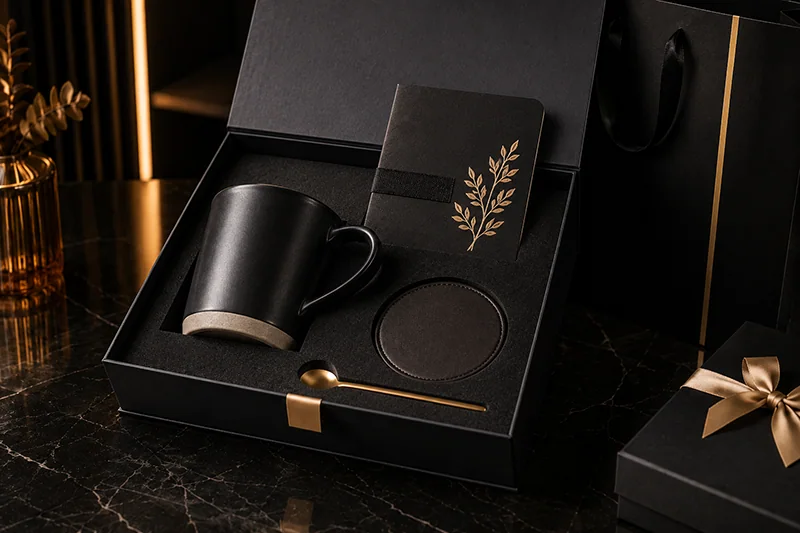

A custom mug gift set is one of the easiest corporate gift ideas for buyers to understand. It is practical, easy to brand, suitable for many recipients and flexible enough to fit different budgets.
For B2B gifting projects, the key is not only choosing a mug. A complete mug gift set should include the right add-on products, logo placement, packaging style and message card. This guide explains what to include when building a branded mug gift box for corporate gifting.

1. Start With the Main Mug or Drinkware Item
The mug is the hero item of the gift set. It gives the buyer a clear product focus and provides strong daily-use value for the recipient.
Popular mug and drinkware options
- Ceramic mug: Suitable for office, coffee break and employee gift sets.
- Travel mug: Good for commuting, remote teams and practical daily use.
- Stainless steel tumbler: A more premium option for executives or VIP clients.
- Insulated bottle: Suitable for employee welcome kits, events and outdoor programs.
For most corporate buyers, a ceramic mug is a good starting point because it is simple, familiar and easy to customize.
2. Add a Coaster for a More Complete Set
A coaster is a small but useful add-on. It makes the gift set feel more complete and reinforces the coffee or office theme.
Coasters can be made from cork, PU leather, silicone, wood, ceramic or felt. For a premium business look, PU leather or dark neutral coasters usually work well.
3. Include a Spoon or Small Coffee Accessory
A spoon is especially useful for coffee break gift sets. It makes the set feel more thoughtful and can improve the unboxing presentation.
For a clean corporate look, buyers often choose a stainless steel spoon, gold-tone spoon or matte black spoon depending on the color theme.
4. Add Notebook, Sticky Notes or Pen for Office Use
If the gift is for employees, meetings or office use, stationery products can make the mug gift set more practical.
- Notebook: Good for onboarding kits, conferences and executive gifts.
- Sticky notes: Suitable for office coffee break sets and desk gifts.
- Metal pen: A simple add-on that works for almost every corporate gift box.
- Desk accessory: Useful for premium office-themed gift sets.
For example, a popular office set can include a ceramic mug, coaster, spoon, sticky notes, thank you card and gift box.
5. Use a Greeting Card or Thank You Card
A card helps explain the purpose of the gift. It also gives buyers a place to add a company message, campaign slogan, QR code or thank-you note.
Different card types can be used for different scenarios:
- Welcome card: For new employee onboarding kits.
- Thank you card: For client appreciation gifts.
- Event card: For conferences, trade shows and campaigns.
- Holiday card: For Christmas, New Year and seasonal gifting.
6. Choose Packaging That Matches the Gift Level
Packaging is what turns individual products into a complete corporate gift set. It affects first impression, shipping protection and perceived value.
| Packaging Type | Best For | Typical Use |
|---|---|---|
| Mailer Box | Bulk and cost-effective projects | Employee kits, office gifts, event giveaways |
| Rigid Gift Box | Premium presentation | VIP clients, executive gifts, partner gifts |
| Paper Bag | Easy distribution | Conferences, exhibitions, meetings |
| Box Sleeve | Brand upgrade | Logo display, campaign message, gift theme |
For B2B projects, the best choice depends on quantity, budget, product size and shipping method.
Recommended Custom Mug Gift Set Combinations
Basic Mug Gift Set
- Ceramic mug
- Coaster
- Thank you card
- Custom mailer box
Office Coffee Break Gift Set
- Ceramic mug
- Coaster
- Spoon
- Sticky notes
- Thank you card
- Gift box or paper bag
Premium Corporate Mug Gift Box
- Premium ceramic mug or travel mug
- Notebook
- Metal pen
- Coaster
- Greeting card
- Rigid gift box with logo sleeve
Tip for buyers: If you are not sure which combination to choose, send your quantity, budget, logo file, delivery country and target date. A supplier can recommend a suitable product mix before quoting.
Logo Branding Options for Mug Gift Sets
A mug gift set can display a company logo in multiple places. This makes the gift more consistent and professional.
- Mug logo printing
- Coaster logo customization
- Notebook or pen logo
- Custom thank you card
- Gift box logo or sleeve
- Sticker, label or paper bag branding
Common branding methods include screen printing, heat transfer, UV printing, laser engraving, foil stamping and custom labels.
Best Use Cases for Custom Mug Gift Sets
Custom mug gift sets are suitable for many B2B scenarios. They are especially useful when the buyer wants a practical gift that is easy to use and easy to customize.
- Employee onboarding gifts
- Client thank you gifts
- Office coffee break gifts
- Conference speaker gifts
- Trade show follow-up gifts
- Holiday corporate gift boxes
- Remote team appreciation gifts
What Buyers Should Prepare Before Requesting a Quote
To get a faster and more accurate quotation, prepare the following information:
- Estimated quantity
- Target budget per set
- Preferred mug style
- Preferred add-on products
- Logo file or brand guideline
- Packaging preference
- Delivery country
- Target delivery date
Related Custom Gift Set Pages
Explore these related gift set options if you are comparing different corporate gifting directions:
- Custom Mug Gift Sets
- Coffee Break Office Gift Sets
- New Employee Welcome Mug Gift Sets
- Client Thank You Gift Boxes
- Corporate Gift Box Packaging
Conclusion
A custom mug gift set is a flexible and practical corporate gift solution. By combining the right mug, useful add-ons, logo branding, message card and packaging, buyers can create a gift box that feels complete and professional.
For most B2B projects, the best approach is to start with the recipient and budget, then choose a product combination that matches the gifting scenario.